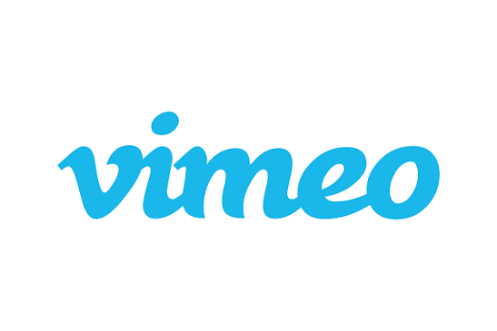

A vida é construída a partir das escolhas que fazemos todos os dias. Algumas decisões são simples, enquanto outras podem mudar completamente o rumo da nossa história.
O conteúdo "Escolhas da Vida" nos convida a refletir sobre nossos caminhos, atitudes e decisões. Cada escolha pode trazer aprendizados e contribuir para nosso crescimento pessoal.
O áudio e o vídeo apresentados nesta página foram escolhidos por transmitirem uma mensagem de reflexão e motivação, mostrando a importância de pensar sobre nossas decisões, aprender com as experiências e seguir em frente buscando construir um futuro melhor.
Escolha onde assistir e aproveite um dos grandes sucessos do rock. Acesse o YouTube ou o Vimeo e curta o som do Guns N' Roses! 🤘🎶
